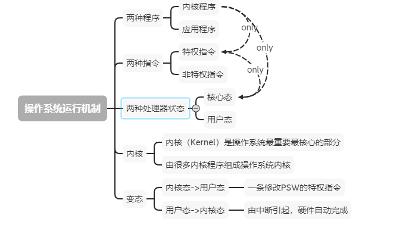
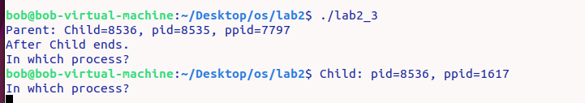
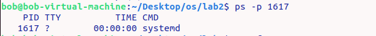

OS
深入理解计算机系统
第一章
信息就是位+上下文
区分不同数据对象的方法是这些数据对象的上下文
程序被其他程序翻译成不同的格式
Unix系统上，从源文件到目标文件的转化是由编译器驱动程序完成的
gcc -o hello hello.c
这个编译过程可以分为4个阶段，执行这4个阶段的程序（预处理器、编译器、汇编器和链接器）一起构成了编译系统（compilation system）

王道计算机考研
第一章
1.1
什么是操作系统(Operating System OS)：
是系统资源的管理者：控制和管理整个计算机系统的硬件和软件资源，并合理地组织调用计算机的工作和资源的分配
提供的功能：处理机管理，储存器管理，文件管理，设备管理
目标：安全，高效
向上层提供方便易用的服务：以提供给用户和其他软件方便的接口和环境
GUI(Graphical User Interface)：图形化用户接口
联机命令接口(=交互式命令接口)：比如Windows的cmd命令行，用户说一句，系统做一个命令
脱机命令接口(=批处理命令接口)：用户说一堆命令，系统执行一堆命令
程序接口：可以在程序中进行系统调用来使用程序接口。普通用户不能直接使用程序接口，只能通过程序代码间接使用
有的教材中：系统调用=广义指令
有的教材中l:命令接口和程序接口统称用户接口

是最接近硬件的一层软件：是计算机系统中最基本的系统软件
需要实现对硬件机器的拓展
操作系统的四个特征：并发、共享、虚拟、异步
并发：一段时间上看着像同时运行，但是在某一时刻只有一个运行(并行的某一时刻同时运行)
共享：有互斥共享和同时共享
虚拟：把物理上的实体变为若干个逻辑上的对应物
（一个程序需要放入内存并分配CPU才能执行）一个游戏需要4G运行内存，其他的程序也需要一些内存，但我的电脑只有4G，可是它们可以同时运行。—-虚拟存储技术中的空分复用技术
单核CPU可以运行多个程序，CPU不是已经被分配给某程序吗—–时分复用技术-微观上处理机在各个小的时间段内交替着为各个进程服务
异步：程序不是一次性执行完的，中间可能多停，以不可预知的速度前进
1.2 OS的发展和分类
分时操作系统不能优先处理一些紧急任务。对每个用户/作业都是公平的
实时操作系统可以优先响应一些紧急任务
硬实时系统、软实时操作系统
1.3
运行机制
CPU中有一个寄存器叫程序状态字寄存器（PSW），其中有个二进制位，1表示内核态，0表示用户态
内核态—->用户态：执行一条特权指令–修改PSW的标志位为“用户态”，这个动作说明操作系统将注定让出CPU使用权
用户态—>内核态：由“中断”引发，硬件自动完成变态过程，触发中断信号意味着操作系统将强行夺回CPU使用权

中断和异常
应用程序请求操作系统内核的服务，会执行一条特殊的指令–陷入指令，会引发内中断
系统调用
应用程序通过系统调用来请求获得操作系统内核的服务
共享资源的操作
操作系统体系结构
变态的过程是有成本的，要消耗时间，频繁地变态会降低系统性能
操作系统引导 boot
主引导记录（MBR）:包含磁盘引导程序和分区表
虚拟机
第一类虚拟机管理程序 Virtual Machine Monitor VMM，直接运行在硬件上，处在内核空间
每个虚拟机的操作系统运行在虚拟内核空间，实际上是运行在用户态的
第二类VMM ，运行在宿主操作。VirtualBox、VMware
第二章
进程控制块（PCB Process Control Block）
PCB是进程存在的唯一标志，当进程被创建时，操作系统为创建PCB。
实验
实验1
1 | mkdir 新建目录 |
vim
文件的保存和退出：
实验2
fork() 调用返回两次是因为它在创建新进程时会创建当前进程的一个副本，而这两个副本都将继续执行。下面是详细的解释：
父进程中：
- 在父进程中，
fork()返回新创建的子进程的PID（进程ID）。 - 父进程获得的返回值是非零的，通常是子进程的PID。这样，父进程可以通过返回值判断它是在父进程中执行的代码块。
- 在父进程中，
子进程中：
- 在子进程中，
fork()返回0。 - 子进程的返回值是0，用于区分它是在子进程中执行的代码块。
- 在子进程中，
这样，通过检查 fork() 的返回值，程序可以在父子进程中采取不同的执行路径。这种设计的灵活性使得程序能够在创建新进程后采取适当的行动。
并发执行：
fork()创建了两个相同的进程，它们可以在同一时刻并发执行。这样可以充分利用多核处理器的性能。独立的执行环境： 父子进程各自拥有独立的地址空间。这意味着它们可以独立地运行，互不影响。子进程的状态（变量值等）不受父进程的影响，反之亦然。
灵活性： 通过在父子进程中检查
fork()的返回值，程序可以选择在不同的执行路径中采取不同的行动。这是一种创建并发、灵活的方式。
总体来说，fork() 的返回两次是为了让程序能够在父子进程之间进行不同的操作，以实现更灵活和并发的程序设计。
**getpid()**：获取当前进程的PID（进程ID）
**getppid()**： 获取当前进程的父进程的PID（父进程ID）
**wait()**：系统调用，用于父进程等待其子进程结束
父子进程相互独立，不会因为父进程结束而子进程结束，但是子进程的父进程ppid改变了
1 | #include <stdio.h> |

这里父进程先执行完，显示的子进程是8536，自己的进程是8535.
而下面子进程输出的父进程pid改变了，这里先让子进程休眠3秒保证父进程先执行完。
当父进程在 执行完并退出后，子进程的父进程 ID (ppid) 就会变为 1，即切换到 init 进程的 ID，但是这里我的输出是1617。
这里查看了pid=1617是什么进程

是systemd进程，然后对其进行了解，systemd是一个系统和服务管理器，是一个系统初始化和管理的主要组件，用于替代传统的init系统
实验3
1 | #include <unistd.h> |
SIGALRM：当使用 alarm 函数设置一个定时器，并且指定了一个计时时间（秒数），当计时时间到达时，操作系统会向进程发送 SIGALRM 信号，这样就触发了定时器的到期事件。
在 C 语言中，可以使用 signal 函数或 sigaction 函数来为 SIGALRM 信号注册一个处理函数，以定义在信号到来时要执行的操作。
1 | signal(SIGALRM, alarm_handler); |
signal(SIGINT, SIG_IGN) 的作用是将中断信号 SIGINT 的处理方式设置为忽略
一个错误
在 C 语言中，运算符的优先级会影响表达式的求值顺序。在这里，> 运算符的优先级高于 = 运算符，因此在没有明确括号的情况下，条件表达式会先进行 fork() > 0 的比较，然后再将结果赋给 p1 和 p2。
具体来说：
if(p1=fork() > 0)将先计算fork() > 0，得到一个布尔值（1 或 0），然后将该布尔值赋给p1。这样，p1的值始终是 0 或 1，并不是预期的子进程的 PID。同理，
if(p2=fork() > 0)也会导致类似的问题。
为了正确地获取子进程的 PID，应该在 fork() 前添加括号，确保先执行 fork()，然后再进行比较，如下所示：
1 | if ((p1 = fork()) > 0) |
1 | if ((p2 = fork()) > 0) |
这样就保证了先执行 fork()，然后再将结果赋给 p1 和 p2。
管道
存储管道的文件描述符，fd[0]用于读取，fd[1]用于写入
1 | int fd[2]; |
实验4
消息队列
1 | msgqid = msgget(MSGKEY, 0777 | IPC_CREAT); |
- MSGKEY 是消息队列的关键字，用于唯一标识一个消息队列，通常有开发者指定，并在不同进程间共享，以便它们能访问同一个消息队列
- 0777是消息队列的权限设置
- IPC_CREAT 标识表示如果消息队列不存在就创建一个新的
- mdgqid 是一个变量，用于存储获取或创建的消息队列的ID
发送消息
1 | msgsnd(msgqid,&msg,1030,0); |
msgqid：消息队列的ID，表示将消息发送到哪个消息队列。&msg：指向存储消息内容的结构体的指针。在这里，msg应该是一个结构体，其中包含了消息的内容，包括消息类型（mtype）和其他信息。1030：消息的大小，以字节为单位。这里表示消息的大小为 1030 字节。消息的大小要小于或等于消息队列的限制。0：消息发送的标志位，通常设为 0 表示阻塞式发送。如果设置为非零值，可以控制发送消息的行为，例如设置为IPC_NOWAIT表示非阻塞发送。
接收消息
1 | msgrcv(msgqid, &msg, 1030, 0, 0); |
msgqid：消息队列的ID，表示从哪个消息队列接收消息。&msg：指向存储接收到的消息内容的结构体的指针。在这里，msg应该是一个结构体，用于存储接收到的消息的内容，包括消息类型（mtype）和其他信息。1030：消息的大小，以字节为单位。这里表示期望接收的消息的最大大小为 1030 字节。实际接收到的消息大小不会超过这个值。0：消息的类型。如果为 0，表示接收队列中的第一条消息。如果指定了其他值，只有类型匹配的消息才会被接收。0：接收消息的标志位，通常设为 0 表示阻塞式接收。如果设置为非零值，可以控制接收消息的行为，例如设置为IPC_NOWAIT表示非阻塞接收。
阻塞式接收指的是当接收方尝试从消息队列中接收消息时，如果队列为空，接收方会被阻塞（暂停执行），直到队列中有消息可供接收为止。这种方式保证了接收方只有在有消息可以处理的情况下才会继续执行。
释放消息队列
1 | msgctl(msgqid, IPC_RMID,0); |
msgqid：表示要操作的消息队列的标识符（ID）。IPC_RMID：表示要执行的操作。在这里，IPC_RMID表示删除消息队列。0：通常情况下，这个参数可以不用管，可以设置为 0。
创建或获取一个共享内存标识符
1 | shmid = shmget(SHMKEY, 1024, 0777 | IPC_CREAT); |
这段代码使用 shmget 函数创建或获取一个共享内存标识符（Shared Memory Identifier）。具体参数和含义如下：
1 | shmid = shmget(SHMKEY, 1024, 0777 | IPC_CREAT); |
SHMKEY：共享内存的键值，是一个整数。在不同的进程之间，通过相同的键值可以访问同一块共享内存。通常，这个键值是一个事先定义好的常数。1024：表示共享内存的大小，单位是字节。在这里，共享内存的大小为 1024 字节。0777 | IPC_CREAT：表示创建共享内存区域的访问权限。0777是八进制表示的权限位，这里表示读、写、执行权限。IPC_CREAT表示如果没有找到具有给定键值的共享内存，则创建一个新的。shmid：是shmget返回的共享内存标识符，可以用于后续的共享内存操作。
1 | shmctl(shmid, IPC_RMID, 0); |
shmid：是由shmget返回的共享内存标识符，用于指定要操作的共享内存区域。IPC_RMID：是shmctl的命令参数，表示要执行的操作是删除共享内存区域。0：是额外的参数，通常设置为 0。